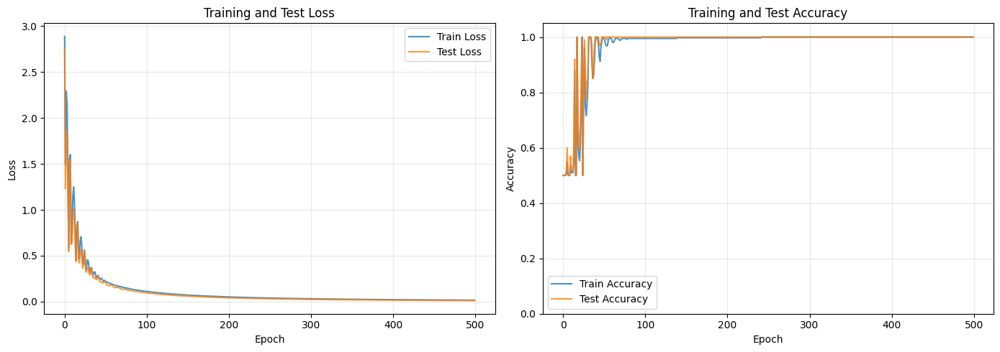

import matplotlib.pyplot as plt
from matplotlib.colors import LogNorm
import numpy as np
import torch
import torch.nn as nn
import torch
from datasets import load_dataset
from tqdm import tqdm
from transformers import AutoTokenizer, AutoModelForCausalLM# Clear MPS cache
if torch.backends.mps.is_available():
torch.mps.empty_cache()
# Also clear any cached gradients
import gc
gc.collect()0model_name = "microsoft/phi-3-mini-4k-instruct"
model = AutoModelForCausalLM.from_pretrained(
model_name)
tokenizer = AutoTokenizer.from_pretrained(model_name)
tokenizer.pad_token = tokenizer.eos_token
modelPhi3ForCausalLM(
(model): Phi3Model(
(embed_tokens): Embedding(32064, 3072, padding_idx=32000)
(layers): ModuleList(
(0-31): 32 x Phi3DecoderLayer(
(self_attn): Phi3Attention(
(o_proj): Linear(in_features=3072, out_features=3072, bias=False)
(qkv_proj): Linear(in_features=3072, out_features=9216, bias=False)
)
(mlp): Phi3MLP(
(gate_up_proj): Linear(in_features=3072, out_features=16384, bias=False)
(down_proj): Linear(in_features=8192, out_features=3072, bias=False)
(activation_fn): SiLUActivation()
)
(input_layernorm): Phi3RMSNorm((3072,), eps=1e-05)
(post_attention_layernorm): Phi3RMSNorm((3072,), eps=1e-05)
(resid_attn_dropout): Dropout(p=0.0, inplace=False)
(resid_mlp_dropout): Dropout(p=0.0, inplace=False)
)
)
(norm): Phi3RMSNorm((3072,), eps=1e-05)
(rotary_emb): Phi3RotaryEmbedding()
)
(lm_head): Linear(in_features=3072, out_features=32064, bias=False)
)def generate_dataset_ALL_CAPS(n_samples=500):
# Simple vocabulary to construct sentences
subjects = ["The cat", "A dog", "The car", "My friend", "The bird", "A plane", "The code", "This model", "The robot", "A machine"]
verbs = ["jumps over", "runs to", "flies above", "looks at", "sits on", "moves to", "likes", "sees", "devours", "builds"]
things = ["the fence", "the hill", "the cloud", "the screen", "the table", "the city", "the pizza", "the park", "the book", "the house"]
data = []
labels = []
for subject in subjects:
for verb in verbs:
for thing in things:
sequence = subject + " " + verb + " " + thing
data.append(sequence)
labels.append(0)
data.append(sequence.upper())
labels.append(1)
data = data[:n_samples]
labels = labels[:n_samples]
return data, labels
dataset,labels = generate_dataset_ALL_CAPS()
labels = torch.tensor(labels)
print(f"Generated {len(dataset)} sequences.")Generated 500 sequences.def generate_dataset_HTML(n_samples=50):
alpaca = load_dataset("tatsu-lab/alpaca", split="train", streaming=True)
html_alpaca = load_dataset("ttbui/html_alpaca", split="train", streaming=True)
data = []
labels = []
for i, (normal_ex, html_ex) in enumerate(zip(alpaca, html_alpaca)):
if i >= n_samples:
break
normal_text = normal_ex['output']
html_text = html_ex['output']
data.append(normal_text)
labels.append(0)
data.append(html_text)
labels.append(1)
return data, labels
dataset, labels_list = generate_dataset_HTML(n_samples=500)
labels = torch.tensor(labels_list)
print(f"Generated {len(dataset)} sequences ({len(dataset)//2} pairs).")
print(f"Sample Normal: {dataset[0][:50]}...")
print(f"Sample HTML: {dataset[1][:50]}...")Generated 1000 sequences (500 pairs).
Sample Normal: 1.Eat a balanced diet and make sure to include ple...
Sample HTML: <html>
<head>
<title>My Portfolio</title>
...inputs = tokenizer(
dataset,
padding=True,
truncation=True,
return_tensors="pt"
)
print(f"Tokenized {inputs['input_ids'].shape[0]} sequences with max length {inputs['input_ids'].shape[1]}.")Tokenized 1000 sequences with max length 603.with torch.no_grad():
outputs = model(
input_ids=inputs["input_ids"],
attention_mask=inputs["attention_mask"],
output_hidden_states=True,
)import torch.nn as nn
class LinearProbe(nn.Module):
def __init__(self, hidden_dim):
super().__init__()
self.linear = nn.Linear(hidden_dim, 1)
self.sigmoid = nn.Sigmoid()
def forward(self, x):
logits = self.linear(x)
probs = self.sigmoid(logits)
return probs# Extract final layer activations (mean pooling over sequence length)
final_activations = outputs.hidden_states[6].mean(dim=1).float()
print(f"Final activations shape: {final_activations.shape}")Final activations shape: torch.Size([500, 3072])test_fraction = 0.2
train_indices = np.arange(int(len(dataset)*(1 - test_fraction)))
test_indices = np.arange(int(len(dataset)*(1 - test_fraction)), len(dataset))
X_train, y_train = final_activations[train_indices, :].detach(), labels[train_indices]
X_test, y_test = final_activations[test_indices, :].detach(), labels[test_indices]probe = LinearProbe(hidden_dim=final_activations.shape[1])
optimizer = torch.optim.AdamW(probe.parameters(), lr=0.001)
epochs = 500
train_loss_history = []
train_accuracy_history = []
test_loss_history = []
test_accuracy_history = []
for epoch in range(epochs):
train_prediction = probe.forward(X_train).squeeze()
test_prediction = probe.forward(X_test).squeeze()
train_loss = nn.BCELoss()(train_prediction, y_train.float())
test_loss = nn.BCELoss()(test_prediction, y_test.float())
train_loss.backward()
optimizer.step()
optimizer.zero_grad()
train_loss_history.append(train_loss.item())
train_predicted_classes = (train_prediction >= 0.5).long()
train_accuracy = (train_predicted_classes == y_train).float().mean().item()
train_accuracy_history.append(train_accuracy)
test_loss_history.append(test_loss.item())
test_predicted_classes = (test_prediction >= 0.5).long()
test_accuracy = (test_predicted_classes == y_test).float().mean().item()
test_accuracy_history.append(test_accuracy)fig, (ax1, ax2) = plt.subplots(1, 2, figsize=(14, 5))
# Plot loss curves
ax1.plot(train_loss_history, label='Train Loss', alpha=0.8)
ax1.plot(test_loss_history, label='Test Loss', alpha=0.8)
ax1.set_xlabel('Epoch')
ax1.set_ylabel('Loss')
ax1.set_title('Training and Test Loss')
ax1.legend()
ax1.grid(True, alpha=0.3)
# Plot accuracy curves
ax2.plot(train_accuracy_history, label='Train Accuracy', alpha=0.8)
ax2.plot(test_accuracy_history, label='Test Accuracy', alpha=0.8)
ax2.set_xlabel('Epoch')
ax2.set_ylabel('Accuracy')
ax2.set_title('Training and Test Accuracy')
ax2.legend()
ax2.grid(True, alpha=0.3)
ax2.set_ylim([0, 1.05])
plt.tight_layout()
plt.show()
print(f"Final Train Accuracy: {train_accuracy_history[-1]:.4f}")
print(f"Final Test Accuracy: {test_accuracy_history[-1]:.4f}")
Final Train Accuracy: 1.0000
Final Test Accuracy: 1.0000